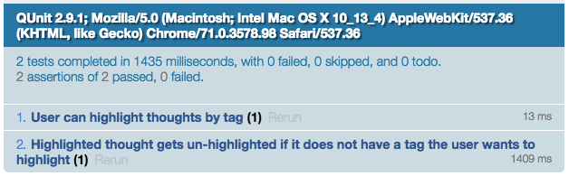
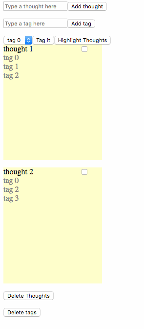
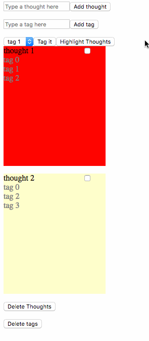

Project Journal: January 31, 2019
Here's a quick progress update on what I originally thought was a set of tasks I could finish last weekend:
et130webapp
- Hide answers by default
- Allow user input
- Notify user if their input is correct or incorrect
ThoughtBoard
- Use "tags" instead of "categories" to avoid default/undesirable/confusing/distracting ordering and sorting
- Replace sorting with a "highlight thoughts by tag" feature
- Create 2D thought elements to help the user better visualize the process
FeelsTracker
- Allow user to click and submit a single petal/emotion
- Finish element which allows user to choose "depth" of the emotion
- Allow user to submit a "depth" emotion
In hindsight---not bad! It took a few more days than planned to wrap my head around the QUnit tests for ThoughtBoard, but I'm pretty excited about getting them to pass:

User can highlight thought by tag

Highlighted thought gets un-highlighted if it does not have a tag the user wants to highlight

Hot diggity!
Finishing up Four Week Versions
Let's see how the next few days go---I'm most intimated by the FeelsTracker, and most wary of deviating from core functionality for et130webapp, as they are both on opposite ends of the progress bar. I'm on the fence about watching the Super Bowl, because I'm a sore loser, so I may have a few more hours to work on this than if Jeffery had caught that pass.